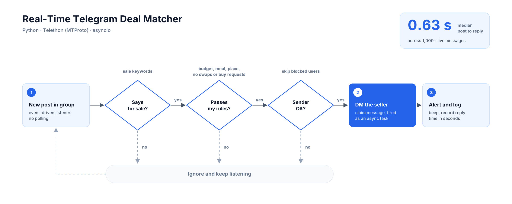

Personal tool · Real-time automation
Real-time Telegram matcher
In large Telegram groups, the first person to reply gets the deal. I built a listener that reads every new post, decides in milliseconds whether it is worth acting on, and messages the seller before a human could finish reading.
- Role
- Designer and developer
- Scale
- 1,000+ live messages
- Stack
- Python, Telethon (MTProto), asyncio
- Code
- Private

How it decides
- Is it a sale? The post must contain sale keywords.
- Does it pass my rules? A blocklist removes posts outside my budget, the wrong meal, the wrong place, swaps and buy requests. The rules are plain lists, so changing what counts as a match takes seconds.
- Is the sender OK? Blocked users are skipped.
- Act. The reply is fired as an async task so the listener never waits on the network, then the bot logs how long it took.
0.63 s
median from a matching post to a sent reply, across more than 1,000 live messages.
Why it is fast
It listens to events instead of polling, filters with cheap string checks before any network call, and never blocks the event loop. The speed comes from the design, not from hardware.